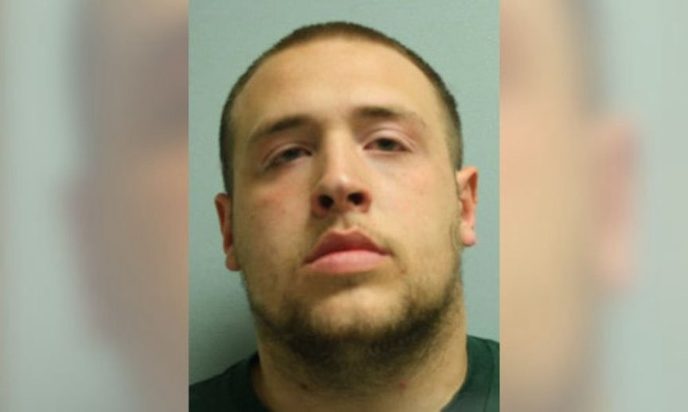
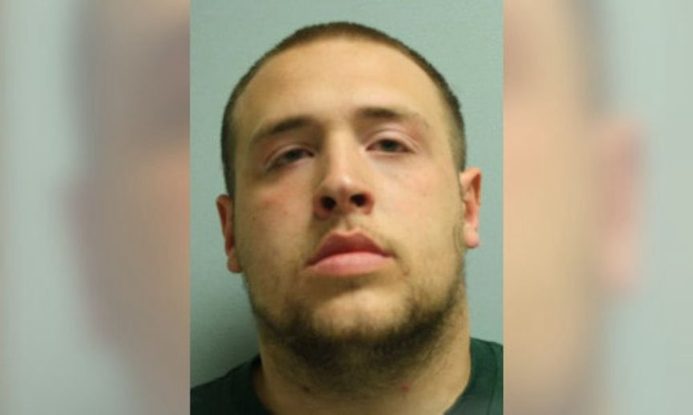

Pennsylvania man Sentenced for Buying Xanax on the Darkweb
A resident of Pittsburgh, Pennsylvania, is set to spend the next 15 months in prison for purchasing Xanax from a darkweb marketplace for and possessing a firearm. The defendant had been purchasing large quantities of Xanax on the darkweb to sell locally for one year or longer.
According to court documents the investigation that led to the conviction of James Robert Czachowski, 22, was triggered by the interception of an international express parcel in April 2018. The package reportedly had a return address in the United Kingdom and contained 11,000 Xanax pills. U.S. Postal Inspectors collaborated with, HSI and FBI agents and planned a controlled delivery of the drug package.
On April 11, 2018, the agents and postal inspectors delivered the package to the addressee. Czachowski’s father accepted and signed for the package’s delivery. On making the delivery, the agents continued to keep watch on the residence, and after some time, Czachowski’s father came out of the house carrying the package. The agents stopped him identified themselves and asked him to tell them where he was taking the package. He told the agents that he was going to deliver the package to his son in Pittsburgh. While still in the custody of the agents the man received a phone call from Czachowski, and the agents asked him to answer the call on speaker. The agents reportedly heard Czachowski ask his father if everything was fine and if he had started the journey to Pittsburgh.
The agents immediately went to Czachowski’s residence. Czachowski gave himself up and allowed the agents to search his house. The search led to the seizure of three firearms; a .22 revolver, a .380, a 9mm revolver, and a Springfield XD 9mm. The agents also found and seized undisclosed rounds of ammunition. Czachowski was then arrested and taken in for questioning.
Czachowski reportedly admitted to the cops that he had been buying Xanax on the darknet for over a year. He also told the agents that he had paid $4,200 for 10,000 Xanax pills and that he intended to resell the pills at $1.50 per pill. He also admitted that he owned the weapons found in his house. Czachowski had an earlier felony conviction that prohibited him from possessing firearms and ammunition.
On March 29, 2019, Czachowski pleaded guilty in federal court to attempted possession with intent to distribute alprazolam and possession of a firearm and ammunition by a convicted felon.
In response to the guilty plea Senior United States District Court Judge Donetta W. Ambrose sentenced Czachowski to 15 months in prison. The prison time will be followed by three years of supervised release.
According to court documents the investigation that led to the conviction of James Robert Czachowski, 22, was triggered by the interception of an international express parcel in April 2018. The package reportedly had a return address in the United Kingdom and contained 11,000 Xanax pills. U.S. Postal Inspectors collaborated with, HSI and FBI agents and planned a controlled delivery of the drug package.
A Picture of Czachowski Taken During Booking
On April 11, 2018, the agents and postal inspectors delivered the package to the addressee. Czachowski’s father accepted and signed for the package’s delivery. On making the delivery, the agents continued to keep watch on the residence, and after some time, Czachowski’s father came out of the house carrying the package. The agents stopped him identified themselves and asked him to tell them where he was taking the package. He told the agents that he was going to deliver the package to his son in Pittsburgh. While still in the custody of the agents the man received a phone call from Czachowski, and the agents asked him to answer the call on speaker. The agents reportedly heard Czachowski ask his father if everything was fine and if he had started the journey to Pittsburgh.
The agents immediately went to Czachowski’s residence. Czachowski gave himself up and allowed the agents to search his house. The search led to the seizure of three firearms; a .22 revolver, a .380, a 9mm revolver, and a Springfield XD 9mm. The agents also found and seized undisclosed rounds of ammunition. Czachowski was then arrested and taken in for questioning.
Czachowski reportedly admitted to the cops that he had been buying Xanax on the darknet for over a year. He also told the agents that he had paid $4,200 for 10,000 Xanax pills and that he intended to resell the pills at $1.50 per pill. He also admitted that he owned the weapons found in his house. Czachowski had an earlier felony conviction that prohibited him from possessing firearms and ammunition.
On March 29, 2019, Czachowski pleaded guilty in federal court to attempted possession with intent to distribute alprazolam and possession of a firearm and ammunition by a convicted felon.
In response to the guilty plea Senior United States District Court Judge Donetta W. Ambrose sentenced Czachowski to 15 months in prison. The prison time will be followed by three years of supervised release.